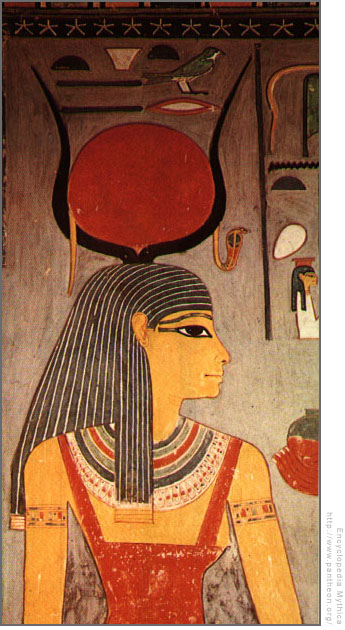
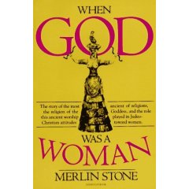

|
নারীকে
ক্ষমতাহীন করেছে একক ঈশ্বরের প্রবক্তারা
দীক্ষক
দ্রাবিড়

আমিই প্রথম এবং
আমিই শেষ
আমিই
সম্মানিতা এবং আমিই ধিক্কৃতা
আমিই পতিতা
এবং
আমিই পবিত্রা
আমিই স্ত্রী
অথচ আমিই কুমারী
আমিই মাতা
এবং আমিই কন্যা
আমিই
আমার মায়ের
সন্তান-সন্ততি
আমিই
বন্ধ্যা এবং শত সন্তানের জননী
আমারই
বিবাহ-উত্সব
ছিল ভুবনখ্যাত
এবং আমিই
কোনো স্বামী গ্রহণ করিনি
আমিই ধাত্রী
এবং যে
কিছুই ধারণ করে না
আমিই আমার
প্রসব বেদনার সান্ত্বনা
আমিই বর এবং
আমিই
কনে
আমার
স্বামীই আমাকে জন্ম দিয়েছে
আমার বাবার
আমিই মা এবং
আমার
স্বামীর
বোন এবং সে আমার
অপত্য....
আমার কথায়
মনোযোগ দাও
আমি সেই যে
অসম্মানিতা
এবং
একই সাথে
শ্রেষ্ঠ।
উপরের কথাগুলো ধর্মগ্রন্থের কথাই মনে হয়।
কিন্তু
প্রচলিত পুরুষ-ঈশ্বরের বাণী নয় তা বক্তব্যে স্পষ্ট।
এমন নারী-কণ্ঠে কোন নারী-ঈশ্বর
কথা বলেছেন তা এখনও অজানা।
তবে এই পবিত্র বাক্যসমূহ আবিষ্কার হয়েছে ১৯৪৫ সালে
মিশরে,
নাগ হাম্মাদি নামে খ্যাত দলিলগুলোর মধ্যে।
এগুলো যীশু খ্রিস্ট মারা যাওয়ার
দুশো বা তিনশ'
বছর পরে লেখা।
ধারণা করা হয় এখানো সোফিয়ার কথা বলা হয়েছে তবে ইসিসের
কথাও হতে পারে এগুলো।
পুরুষ ঈশ্বরের সাথে নারী-ঈশ্বরের ধারণার মূল পার্থক্য
ধরা পড়ে এখানে।
নারী ঈশ্বর বহুমাত্রিক।
তার চরিত্রের মধ্যে সবকিছু অন্তর্ভুক্ত।
সকল
বৈপরীত্য একসাথে স্থান করে নিয়েছে।
নারী-ঈশ্বর তাই একই সাথে প্রাচীন ও
উত্তর-আধুনিক।
তার মধ্যে একসাথে আছে পুরুষ ও নারী সত্ত্বা,
আছে সৃষ্টি ও ধ্বংস।
নারীকে
ক্ষমতাহীন করেছে কারা?
সৃষ্টির অসীম রহস্যময়তা দেখে
এক সময়
ভক্তিতে গদগদ হয়ে মাথা নোয়াতো অসহায় আদিম মানুষ।
সৃষ্টির যত কর্মকান্ড তার মধ্যে সবচে জরুরি,
তখনও মানুষের ব্যাখ্যা-অজানা আর
গুরুত্বপূর্ণ ছিল মানব-জন্ম(নারী
আর পুরুষের মিলনের মধ্য দিয়েই ঈশ্বরকে বন্দনা
করতো একসময় মানুষ।
এই মিলন তখন ছিল উপাসনা,
পবিত্র কর্ম।
যখন নারীদেহ নাপাক ঘোষিত
হলো তখন এই মিলন হলো নিষিদ্ধ আর পাপকর্ম)।
আর এই অসম্ভব জটিল কর্মকান্ডটা ঘটতো
নারীর উদরে;
বিমুগ্ধ পুরুষের কাছে নারী ছিল তাই জীবনের আরেক নাম,
স্রষ্টার রূপ,
ক্ষমতা ও শক্তির আঁধার।
সৃষ্টির উত্পাদনশীলতাকে তাই আদিম মানুষ কল্পনা করেছে নারী
হিসেবে।
পূজা করেছে দেবী হিসেবে।
ফসল ফলায় যে মাটি,
থাকার আশ্রয় দেয় যে ভূমি,
তাকে
পৃথিবী জুড়ে প্রাকৃতিক ধর্মবাদী সব মানুষ তখন সম্মান জানাতো
'মাদার
আর্থ'
হিসেবে।
পুরুষের উত্পাদনের হাতিয়ার,
কলাকৌশল আবিষ্কার আর ধর্মচিন্তার নানা প্রচলনে এখন
পৃথিবী শুধুই পুরুষদের
'প্ল্যানেট
আর্থ'।
মাতৃতান্ত্রিক সমাজব্যবস্থা কোনও
সমাজবিজ্ঞানীর কল্পনা নয়।
খোদ বাংলাদেশের অনেক আদিবাসী নৃ-গোষ্ঠীর মধ্যে এখনও চালু
আছে নারী-প্রধান সমাজ ব্যবস্থা,
মাতৃ-প্রধান পরিবার প্রথা।
শুধু যেসব আদিবাসীর
আঙ্গিনায় হানা দিয়েছে গির্জার পুরোহিতরা সেখানেই শুধু নারীর প্রভাব ক্ষয়ে গেছে
বা
যাচ্ছে।
নারীর দেবীত্ব কেড়ে নিয়েছে ঈশ্বরের ক্রুশ।
খ্রিস্টান ধর্ম ক্রুশকে
নিজেদের প্রতীক বানানোর আগে যে ক্রস চালু ছিল পাশ্চাত্যে তা ছিল
সুইজারল্যান্ডের
পতাকার ক্রসের মত।
দুটি সমান রেখার ক্রস।
নারী ও পুরুষের সমান গুরুত্বে
ভারসাম্য
প্রদানকারী
একটি প্রতীক।
রোমানরা খ্রিস্টান ধর্মকে হাতিয়ে নিয়ে নিজেদের বানানোর পর তারা তাবৎ
চেষ্টা করেছে সমাজে নারীর ক্ষমতা ও ভূমিকাকে সংকুচিত করে ফেলতে।
ক্যাথলিকদের বই
'দি
উইচেস হ্যামার'
হচ্ছে মানব-সভ্যতার ইতিহাসে নারীকে
ক্ষমতাশূন্য করে দেয়ার খুন-রাঙা দলিল।
এর রচয়িতারাই মুক্ত চিন্তার নারী থেকে
পৃথিবীকে মুক্ত করার প্রথম পরিকল্পনা নেয়।
সব বিদুষী নারী,
পূজারী নারী-পুরোহিত,
জিপসি-নারী,
মিস্টিক নারী-পীর-দরবেশদেরকে আখ্যা দেয়া হয়
‘ডাইনী'
হিসেবে।
পাওয়ামাত্র
তাদেরকে খুন করার উন্মাদনায় মাতে ক্যাথলিকরা।
চিকিত্সা জ্ঞানসম্পন্ন
মিডওয়াইফ/ধাত্রীরা যারা সন্তানজন্মকে ব্যথামুক্ত করে প্রসূতিকে আরাম দিতে চাইতো
তাদেরকে হত্যা করতো তারা।
কারণ জেনেসিস-এর ঈশ্বরব্যাখ্যায় প্রসববেদনা নারীর পাপের
শাস্তি- ইভের কর্মফল।
ইউরোপজুড়ে তিনশ বছর ধরে এই ধর্মীয় উন্মাদনায় কম পক্ষে পাঁচ
মিলিয়ন মুক্ত চিন্তার নারীকে হত্যা করা হয়েছে।
নারীমূর্তি ভাঙায় ব্যস্ত পুরুষ ঈশ্বর
এই একটি বিষয়ে ধর্মে বিশ্বাসী ও অবিশ্বাসী পুরুষেরা একমত।
মানুষের কখনও নারী-ঈশ্বর
ছিল না।
তাদের জোর দাবী ঈশ্বর সর্বদাই পুরুষ ছিলেন।
অর্থাৎ,
সমাজে নারীর মর্যাদা এত
উঁচুতে কখনও ছিল না যে মানুষ সৃষ্টিকর্তার কল্পনা করতে গিয়ে তাকে নারী ভাবতে
পারে।
অনেক প্রত্নতাত্ত্বিকরা দুনিয়ার গুহাচিত্র আর মূর্তির ধ্বংসাবশেষ ঘেঁটে শেষ কথা
বলে
দিয়েছেন যে এমন কোনো প্রত্নতাত্ত্বিক প্রমাণ তারা পাননি।
পাওয়া নাই যেতে পারে।
শুধু
মাটির নীচে পাওয়া জিনিসেই সত্য থাকে না,
সত্য অন্যত্রও আছে,
অন্যভাবেও সত্যকে পাওয়া
যায়।
আর প্রত্নতাত্ত্বিক নিদর্শন নিজে থেকে কথা বলে না,
মানুষই এর ব্যাখ্যা দেয়।
একেক ব্যাখ্যা একেক রকম হয়।
তবু যুত্সই নারী-ঈশ্বর মূর্তি না পেয়ে এটাই চালু তত্ত্ব
যে নারী কখনও ঈশ্বর হওয়ার যোগ্য ছিল না।
এমনকি উর্বরতার দেবী নারী ছিলেন তার
প্রমাণও তারা পান না।

তাই যখন মার্লিন স্টোন ১৯৭৬ সালে লিখলেন
‘হোয়েন
গড
ওয়াজ ওম্যান’
তখন বিরোধীমতের লোকেরা হা রে রে রে করে তেড়ে আসলেন।
তবে মার্লিন
স্টোনের ব্যাখ্যার সূত্রে ৭০ ও ৮০-র দশকে চালু হলো রিলিজিয়াস ফেমিনিজম।
এই মতের এক
প্রবক্তা এলিজাবেথ ডেভিস লিখলেন
`দ্য
ফার্স্ট সেক্স'
বইটি।
যাতে তিনি দেখালেন
মিথিওলজি,
এ্যানথ্রোপলজি এবং ডিসিপ্লিন হিসেবে হাঁটি হাঁটি পা পা করলেও আর্কিওলজির
সব তথ্য-উপাত্ত প্রমাণ করে যে সমাজ আগে মাতৃতান্ত্রিক ছিল।
এবং মহাদেবীকে (গ্রেট
গডেস) প্রতিস্থাপিত করে ইহুদি,
খ্রিস্টান মুসলিম ধর্মের অনুসারীরা প্রতিহিংসাপরায়ণ
পুরুষ ঈশ্বরের সৃষ্টি করেছে।
আমার উষ্মাটা শুধু খ্রিস্টান ধর্মের উপর
ভাবলে ভুল
হবে।
ইসলামের ইতিহাস অনেক
বেশি প্রামাণ্য,
অনেক সাম্প্রতিক।
সেখানেও নারী-মূর্তি,
নারী-দেবীর প্রতি আক্রোশ
দেখতে পাই।
একক ঈশ্বরকে প্রতিষ্ঠা করতে গিয়ে নারী-দেবীদের ধ্বংস দেখতে পাই।
পুরুষ
প্রধান সমাজের ভ্যালুজ চালু করতে গিয়ে নারীকে দ্বিতীয় শ্রেণীর নাগরিক করে তোলা
দেখতে পাই।
মক্কা বিজয়ের পর নবী মুহাম্মদ কাবার মধ্যে ঢুকে পাগানদের
দেবী-মূর্তিগুলোকে বাইরে এনে ভাঙ্গেন।
এর মধ্যে ছিল লাত,
উজ্জা ও মানাত।
এরা পূজনীয়
দেবী ছিল শুধু কুরাইশদের নয় সেই উত্তর আফ্রিকা থেকে যারা ফি বছর হজ্জ্ব করতে
আসতো
সেইসব পাগানদের।
নবী মুহাম্মদ ও তার সঙ্গী-সাথীরা দেবীদের মূর্তি ভাঙেন কিন্তু
ইতিহাস সাক্ষ্য দেয় মানুষের মূর্তি ভাঙেননি।
মেরি ও শিশু যীশুর মূর্তি নবী ভাঙেননি।
ভেঙেছেন সেসব নারীমূর্তি যারা থাকলে একক ঈশ্বরের অস্তিত্বই বিপন্ন হয়।
আর আল্লাহও
চরম হুমকিতে থাকেন এসব মূর্তিগুলোর কাছে।
তার একটা ব্যাখ্যাও তিনি দেন কোরানের সুরা
আন নাজমের ২৩ নং আয়াতে
:
نْ هِيَ إِلَّا
أَسْمَاء سَمَّيْتُمُوهَا أَنتُمْ
وَآبَاؤُكُم مَّا
أَنزَلَ اللَّهُ بِهَا مِن سُلْطَانٍ إِن يَتَّبِعُونَ إِلَّا
الظَّنَّ وَمَا
تَهْوَى الْأَنفُسُ وَلَقَدْ جَاءهُم مِّن رَّبِّهِمُ
الْهُدَى
(এগুলো
কিছু নাম ছাড়া কিছু নয়,
যা তোমরা ও
তোমাদের পূর্বপুরুষরা
রেখেছো।
এর সমর্থনে
আল্লাহ কোনও দলিল নাজিল করেননি।
.......)
মাটির নীচে
প্রত্নতাত্ত্বিকদের হাতে আবিষ্কার হওয়ার মত নারী-ইশ্বর,
নারী দেবীর মূর্তি থাকবে কি
করে?
যদি পুরুষের তলোয়ারের আঘাতে সেসব টুকরো টুকরো হয়ে যায়।
লোককাহিনী থেকে আমরা
সেসব কথা পেতে পারি।
সেসব নারী দেব-দেবীর গল্পগাঁথা মনে করিয়ে দেয় একদা এমন সমাজ
ছিল যখন নারীকে ঈশ্বর ভাবতেও মানুষের আপত্তি ছিল না।
একক ঈশ্বরের
প্রবক্তারা গল্পে,
মিথে থেকে যাওয়া দেবীদের,
নারী-ঈশ্বরদের নামগুলো মুছতে পারেনি।
মূর্তির মত এগুলো তো আর ভাঙা যায় না।
তবে তার একটা বিকৃত ব্যাখ্যা চালু করেছে তারা।
খ্রিস্টানরা পাগান নারী দেবীদের নাম চুরি করে এ্যাঞ্জেলদের নাম দিয়েছে আর তা
দিয়ে
গল্প চালু করেছে।
যাতে পরবর্তীতে মানুষ বিভ্রান্ত হয়ে নারী-ইশ্বরদেরকে ভুল করে
খ্রিস্ট ধর্মের এ্যাঞ্জেল ভাবে।
কোরানেও একই তথ্য দেখা যায়।
একই সুরার ২৭ আয়াতে সেই
ব্যাখ্যা পাই আমরাঃ
نَّ الَّذِينَ لَا
يُؤْمِنُونَ بِالْآخِرَةِ لَيُسَمُّونَ
الْمَلَائِكَةَ
تَسْمِيَةَ الْأُنثَى
(যারা
পরকালে বিশ্বাস করে না তারাই
ফেরেশতাদের
নারীর নাম দিয়ে থাকে।)
পাঠ্যপুস্তকে তাই আমরা ইসলামের আগের
সময়কে জাহেলিয়াত বলেই পড়ি।
পড়ি, ‘আরবের
মানুষেরা তখন জীবন্ত কন্যাসন্তান কবর দিত’।
অথচ মিশরের রাণী ক্লিওপেট্রার নাম আমরা ইতিহাসে পাই।
সেই যুগে নারীরা রাণী হতে
পারতো।
খাদিজা বিধবা হয়েও ধনাঢ্য ব্যবসায়ী হতে পারতো?
তবু খাদিজার কর্মচারী থেকে
স্বামী হওয়া মুহাম্মদ যখন নবী হলেন তখন তার প্রচারিত ধর্মের অনুসারীরা দাবী
জানান
ইসলামেই নারীকে সত্যিকার অধিকার দেয়া হয়েছে তখন বিস্ময় লাগে।
এই সেই ধর্ম যে ধর্মে
নারী নেতা হতে পারে না,
ইমাম হতে পারে না,
রাষ্ট্রের অধিপতি হতে পারে না।
অথচ
ইতিহাস বলে,
ইসলাম আসার আগে আরবের বেদুইন সমাজে নারীদের প্রভাব পুরুষদের চেয়ে কম
ছিল না।
(এখনও
আরবের বেদুইন মহিলাদের স্বাধীনচেতা মনোবৃত্তি নিয়ে মুসলিম
রাষ্ট্রকেই বিপাকে পড়তে হয়।)।
উমর খলিফা হওয়ার আগে মক্কা ও মদিনার নারীদের জন্য
হিজাব বাধ্যতামূলক ছিল না।
নারীদের ভাগ্যের চাকা এই পেছনে ঘুরানোর প্রক্রিয়ায় এক
ঈশ্বরের প্রবক্তাদের সক্রিয় ভূমিকার কথা ছড়িয়ে আছে ইতিহাসের পাতায় পাতায়।
এ জানার
জন্য মাটি খুঁড়তে হয় না,
প্রত্নতাত্ত্বিক হওয়ার দরকার করে না।
নারী-ঈশ্বরকে মাটিচাপা দেয়ার জন্য শুধু পুরোহিতরা নয় প্রত্নতাত্ত্বিকরাও দায়ী
মূল কথা ছিল নারীপ্রধান বা মাতৃতান্ত্রিক একটা সমাজ যদি আদিকালে থেকে থাকে তবে
সে
সমাজে মাতৃমূর্তি বা নারী-ঈশ্বর বা দেবীদের উপাসনা হওয়ারই কথা।
এখন আমরা একক
ঈশ্বরের ধারণা পৃথিবীতে চালু হওয়া ও তার সাথে মহাদেবী বা নারী-ঈশ্বর পূজার
বিরোধের
সন্ধান করতে পারি।
বাইবেল ও কোরানে আদম-ইভের যে ঈশ্বরের গল্প আমরা পাই তার
বয়স মানুষের চেয়ে অনেক কম।
নবী মুহাম্মদকে আদমের ২৫ তম প্রজন্ম ধরে আদম ও তার
সন্তানদের বয়সে উদার হাতে গ্রেস দিলেও আদমের স্বর্গপতনের ইতিহাস ৪৫০০ বছরের
বেশি
পুরনো বানানো যায় না।
তবে ইসরাইল-আরবের এই ঈশ্বরের আগেও পৃথিবীর বিভিন্ন প্রান্তে
মানবগোষ্ঠীর মধ্যে একক-পুরুষ-ঈশ্বরের যে গল্পকথা শোনা যায় তা প্রায় ১৪ হাজার
বছরের
পুরনো।
অর্থাত্ আদমের ঈশ্বরের চেয়েও সে ঈশ্বর দশ হাজার বছর পুরনো।
কোনো
সন্দেহ নেই,
ঈশ্বরের ধারণা পৃথিবীর এক বিন্দুতে জন্ম হয়ে পরে তা সর্বত্র ছড়িয়ে পড়ে
নি।
বিভিন্ন জাতিগোষ্ঠীর মানুষ আলাদা আলাদা করে তাদের ঈশ্বর কল্পনা করেছে।
এতো
বিজ্ঞানের সূত্র নয় যে সর্বত্র একই যোগফল হবে।
ধর্ম বরং কলা বা মানবিক শাখার মত;
বিভিন্ন জাতিগোষ্ঠী বিভিন্ন ভাবে ছবি আঁকবে বা কবিতা লিখবে,
গল্প ফেনাবে।
গোল
বাঁধিয়েছেন কার্ল মার্কসের দেশি ফাদার উইলহেম স্মিদ।
১৯১২ সালে তিনি বই লিখলেন
‘দি
অরিজিন অভ দি আইডিয়া অব গড‘।
এতে তিনি তত্ত্ব দিলেন প্রিমিটিভ মনোথিইজমের।
যার
মোদ্দা কথা হচ্ছে পৃথিবীর সব অঞ্চলের সব আদিবাসীদের ধর্ম শুরু হয়েছে একজন
আকাশ-ঈশ্বরের কল্পনা থেকেই।
অন্যান্য দেব-দেবী যুক্ত হয়েছে পরে।
যদিও স্মিদ,
ক্যাথলিক ফাদার ছিলেন,
যদিও তিনি বিবর্তনবাদে বিশ্বাস করতেন না,
যদিও তিনি ফ্রয়েডকে
গাল-মন্দ করতেন,
তবু্ও তার এই তত্ত্ব চার্চ পার হয়ে সমাজবিজ্ঞানের অনেক শাখায়
স্থায়ীত্ব পেয়েছে।
নৃতাত্ত্বিকরা
অনেক আদিবাসী সমাজে গিয়ে দেখতে পেয়েছেন যে তারা দূরবর্তী এক আকাশ-ঈশ্বরের কথা
বলে
তবে সে ঈশ্বর মানুষের কোনো কাজে সাড়া দেয় না বলে তারা বিভিন্ন শক্তির দেব-দেবী
মূর্তি পূজা করতে বাধ্য হয়।
বেশিরভাগ ক্ষেত্রে পুরুষ বিবৃতদাতার তাদের এসব
আকাশ-ঈশ্বরের যে বর্ণনা দেয় তাতে পুরুষালী বৈশিষ্ট প্রধান,
সুতরাং আদিম ঈশ্বরের
একটা পুরুষমত ধারণা আমরা পাই।
এর বিপরীতে আমরা
নারী-ঈশ্বর,
মহাদেবীর কিছু কাহিনীও পাই।
কিন্তু পুরুষ-প্রধান সমাজ ব্যবস্থায়
নারী-ঈশ্বরের কথা কেউ জোরালো কণ্ঠে বলে না।
তবু্ও ১০০ খ্রিস্টাব্দে গ্রিক ঐতিহাসিক
প্লুটার্ক মহাদেবী ইসিস-কে চিহ্নিত করেন প্রকৃতির নারী উপাদান হিসেবে।
প্লুটার্কের
মৃত্যুর সময়কালে আরেক গ্রিক দার্শনিক এপুলিউস
‘দি
গোল্ডেন এ্যাস‘
নামে এক বই লেখেন
সেখানে দেখা যায় মহাদেবী ইসিস বলছেন:
‘আদিম
ফ্রাইজিয়ানরা আমাকে ডাকতো
পেসিনানটিকা,
দেবতাদের মাতা;
এথেন্সবাসী আমাকে ডাকে সেক্রোপিয়ান আর্টেমিস,
সাইপ্রাস
দ্বীপের বাসিন্দাদের কাছে আমি পাফিয়ান আফ্রোদিতি,
ক্রিটের শিকারীদের কাছে আমি
ডিকটায়ানা,
ত্রিভাষী সিসিলিয়ানদের কাছে প্রোসারপাইন।
কেউ আমাকে চেনে জুনো নামে, কেউ
চেনে বেলোনা নামে,
কিন্তু ইথিওপিয়ানদের দুই গোত্র আর মিশরবাসী,
যারা আদি বিদ্যায়
বুত্পত্তি অর্জন করেছিল, ...তারা
আমাকে ডাকে আমার আসল নামে,
রাণী
ইসিস।‘
পৃথিবীর বিভিন্ন প্রান্তের নারী-ঈশ্বর,মহাদেবী
বা দেবীর পূর্ণাঙ্গ
নামের তালিকার জন্য এই ওয়েবসাইটটিতে ঢুঁ মারতে পারেন:
http://www.mothergoddess.com/
অনেকেই অভিযোগ তোলেন,
কোনো প্রত্নতাত্ত্বিক
খননেই নারী-ঈশ্বর বা মহাদেবীর কোনো প্রমাণ পাওয়া যায়নি।
কথাটা অসত্য এবং ভুল
তত্ত্বের কারণে বিভ্রান্তিতে সৃষ্ট মতবাদ।
প্যালিওলিথিক যুগের খনন কাজে শুধু
ইউরোপের ৩ হাজার বর্গমাইলের মধ্যে প্রায় ১ হাজার নারী মূর্তি বা ছবির সন্ধান
পাওয়া
গেছে।
যেগুলোর কিছু কিছু ২৭,০০০
খ্রিস্ট-পূর্বাব্দের।
সমস্যা হচ্ছে
এসব নারী-মূর্তি বা ছবির ব্যাখ্যায়।
কেউ ব্যাখ্যা দিয়েছেন এগুলো কোনো বিশেষ নারীর
প্রতিকৃতি,
কোনো প্রাচীন সুন্দরী রমণীর ভাষ্কর্য,
অথবা গ্রাগৈতিহাসিক পর্ণোগ্রাফি
বা ইরোটিকা।
আজ থেকে ৩০ হাজার বছর আগের মানুষ ইরোটিকার জন্য নারী-মূর্তি বানাতো এ
শুধু পুরুষ প্রত্নতাত্ত্বিকদের পক্ষেই কল্পনা করা সম্ভব।
এখানেই প্রমাণ,
শুধু ধর্ম
নয়,
বিজ্ঞানও নারীর ক্ষমতায়নের বিরুদ্ধে কাজ করেছে,
যেহেতু কিছু পুরুষরা এর
নেতৃত্বে ছিল বলে।
মাত্র বিংশ শতাব্দীতে এসে প্রত্নতাত্ত্বিক মারিয়া গিমবুতাস
(১৯২১-১৯৯৪)
ব্যাখ্যা দিলেন যে এসব মূর্তি হচ্ছে মিথোলজিক্যাল চরিত্র এবং বিভিন্ন
ঋতুতে বা বিভিন্ন মিথকে পুনরানুষ্ঠান করার আশায় এসব মূর্তি ব্যবহৃত হতো।
মারিয়া
প্রথম ব্যাখ্যা দেন যে,
প্রাচীন ইউরোপ ছিল নারী-ঈশ্বর/মহাদেবী কেন্দ্রিক ও
মাতৃতান্ত্রিক।
অন্যদিকে ব্রোঞ্জ যুগের ইন্দো-ইউরোপিয়ান সমাজের সংস্কৃতি ছিল
পিতৃতান্ত্রিক।বলাবাহুল্য,
তার ব্যাখ্যা অনেকের কাছেই গ্রহণযোগ্য মনে হয়নি।
কিন্তু
মারিয়া মানুষের ইতিহাসে নারী ও নারী-ঈশ্বরের নতুন অবস্থান তৈরি করে দিতে সক্ষম
হয়েছেন।
এখন অনেকেই মনে করেন যে,
এসব নারী-মূর্তির সাথে জমির উর্বরতা
প্রার্থনা,
নারী দেবীদের সন্তুষ্টি অর্জনের চেষ্টা,
ঋতু-উপাসনা এবং মহাদেবী পূজার
মধ্যে একটা
যোগসূত্র রয়েছে।
নারীর ইসলাম বা ইসলামের নারী
কুরআনের এবং আরব অঞ্চলের প্রধান
ধর্মগুলোর পুরুষ থেকে নারীর সৃষ্টি এবং পুরুষের জন্যই তাদের সৃষ্টির যে গল্প,
এটাই
এসব ধর্মের মূল নারী বিষয়ক দর্শন হয়ে উঠেছে।
সুতরাং কাঠমোল্লা থেকে মুসলিম মনীষি
সবাই ব্যাখ্যা দিয়ে থাকেন যে,
নারীকে সৃষ্টি করা হয়েছে পরে এবং পুরুষের আনন্দের
জন্য।
এই মিথ বা গল্পকথাকে আরো বাড়ানো হয়েছে এবং এটাকে একটি পবিত্রতার কাপড় পড়ানো
হয়েছে যাতে এই গল্পের কেউ কোনো সমালোচনা করলে তা হয়ে দাঁড়ায় ধর্মগ্রন্থের
অবমাননা।
'নারী
পুরুষের জন্য সৃষ্টি করা হয়েছে'-এ
কথায় যদি কেউ অবমাননার বিষয় খুঁজে না পান
তবে তাকে কী বলা যায়।
সেক্ষেত্রে একটি হাদিস দেখুন: হাদিসে আছে:
‘নারীদের
প্রতি
বন্ধুত্বমূলক আচরণ করো কারণ তাদেরকে বুকের হাড় থেকে তৈরি করা হয়েছে,
বুকের
বাঁকা হাড়,
যদি তুমি
তাকে সোজা করতে চাও তবে তা ভেঙে যাবে;
আর যদি তুমি
কিছুই না
করো,
তবে সে
বাঁকাই থেকে যাবে।‘
এ বাক্যটি নিশ্চয়ই অবমাননাকর।
কিঞ্চিত
আত্মসম্মানবোধ থাকলে কোনো নারীই তা অস্বীকার করতে পারবেন না।
তাদের অনেকেই হয়তো
কোরানের এই
আয়াতগুলোতেও নারীর প্রতি অবজ্ঞার বিষয়টি খুঁজে পান না:
‘হে
ঈমানদারগন! তোমাদের
প্রতি নিহতদের ব্যাপারে কেসাস গ্রহণ করা বিধিবদ্ধ করা হয়েছে।
স্বাধীন
ব্যক্তি স্বাধীন ব্যক্তির বদলায়,
দাস দাসের
বদলায় এবং নারী নারীর বদলায়।‘
(২ : ১৭৮)
‘আর তালাকপ্রাপ্তা নারী
নিজেকে অপেক্ষায় রাখবে তিন হায়েয পর্যন্ত, আর যদি সে আল্লাহর প্রতি এবং আখেরাত
দিবসের উপর ঈমানদার হয়ে থাকে, তাহলে আল্লাহ্ যা তার জরায়ুতে সৃষ্টি করেছেন তা
লুকিয়ে রাখা জায়েজ নয়। আর যদি সদ্ভাব রেখে চলতে চায়, তাহলে তাদেরকে ফিরিয়ে
নেবার অধিকার তাদের স্বামীরা সংরক্ষণ করে| আর পুরুষদের যেমন স্ত্রীদের উপর
অধিকার রয়েছে, তেমনি ভাবে স্ত্রীদেরও অধিকার রয়েছে পুরুষদের উপর নিয়ম অনুযায়ী,
আর নারীরদের ওপর পুরুষদের শ্রেষ্ঠত্ব রয়েছে।‘ (২ : ২২৮)
‘আল্লাহ্ তোমাদেরকে তোমাদের
সন্তানদের সম্পর্কে আদেশ করেন: একজন পুরুষের অংশ দু’জন নারীর অংশের সমান। অত:পর
যদি শুধু নারীই হয় দু-এর অধিক, তবে তাদের জন্যে ঐ মালের তিন ভাগের দুই ভাগ যা
ত্যাগ করে মরে এবং যদি একজনই হয়, তবে তার জন্যে অর্ধেক| মৃতের পিতা-মাতার মধ্য
থেকে প্রত্যেকের জন্যে ত্যাজ্য সম্পত্তির ছয় ভাগের এক ভাগ, যদি মৃতের পুত্র
থাকে। যদি পুত্র না থাকে এবং পিতা-মাতাই ওয়ারিস হয়, তবে মাতা পাবে তিন ভাগের এক
ভাগ। অত:পর যদি মৃতের কয়েকজন ভাই থাকে, তবে তার মাতা পাবে ছয় ভাগের এক ভাগ
ওছিয়্যেেতর পর, যা করে মরেছে কিংবা ঋণ পরিশোধের পর| তোমাদের পিতা ও পুত্রের
মধ্যে কে তোমাদের জন্যে অধিক উপকারী তোমরা জান না।’ (৪ : ১১)
তো সুরা বাক্বারা ও নিসার আয়াতগুলো পড়ুন।
নিসার তিন
নম্বর
আয়াতে আছে
পুরুষের বহুবিবাহের অধিকার আর
৩৪
নম্বর
আয়াতে আছে প্রহারের অধিকার।
সেগুলো এখানে
পুনরুল্লেখ করলাম না।
নিসার
১১ নং
আয়াতে পুরুষ সন্তান ও মেয়ে সন্তানের মধ্যে
যে পার্থক্য করা হয়েছে তার বিরুদ্ধে সারা পৃথিবীতে অনেক মুসলিম নারী সংগঠন
আন্দোলন
করছে।
তাদের বক্তব্য একটাই পিতার কাছে সন্তানের লিঙ্গ পরিচয় বড় হতে পারে না।
কিন্তু
কোরানে নারীর প্রতি অবমাননাকর বক্তব্য আছে আরো অনেক আয়াতেই।
হতে পারে এর একটি কারণ
কুরাইশরা যে তিনটি দেবীর পূজা করতো সে তিনটি দেবী নারী ছিলেন।
পুরুষের তুলনায় নারী
যে নীচু তা বুঝা যায়
কোরাণের
অনেক আয়াতে (যেমন: ৪:১১৭,
৪৩:১৫-১৯,
৫২:৩৯,
৩৭: ১৪৯-৫০,
৫৩:২১-২২,
৫৩: ২৭)।
কোরআনে নবীর স্ত্রীদের উদ্দেশ্যে
কিছু আয়াত আছে যা পরবর্তীতে সব মুসলিম নারীদের উপর চাপিয়ে দেয়া হয়েছে।
এছাড়া অসংখ্য
হাদিস আছে যেগুলোতে নারীর অবস্থানকে খাটো করা হয়েছে।
হাদিসের সূত্র নিয়ে অনেক
বিতর্ক রয়েছে এবং অনেক হাদিসকে পরবর্তীতে অশুদ্ধ বলে দাবী করা হয়েছে।
এসব কারণে
সেসব সূত্র উল্লেখ করা থেকে বিরত থাকলাম।
তবে হাদিসের সূত্র ধরে আমাদের সমাজে চলে
আসা কিছু রীতি বা বক্তব্য আছে যা আমরা শুনি।
যেমন: "স্বামীর পায়ের নীচে স্ত্রীর
বেহেশত", “নারীর চলন বাঁকা”,
কিংবা “নারীর একমাত্র সদগুণ হল পতিব্রতা স্ত্রী হওয়া”
ইত্যাদি।
এধরনের আরো অজস্র নিয়ম-কানুন-রীতি ও আইন দিয়ে মুসলিম রমণীদের ভূমিকা
ইসলামে নির্ধারণ করে দেয়া হয়েছে যে ভূমিকা হলো বাড়িতে থাকা,
পুরুষের ইশারায় ছুটে
আসা,
স্বামীকে মান্য করা তার ধর্মীয় দায়িত্ব।
হাদিসে আরো বলা আছে একজন স্ত্রী কখনও
তার স্বামীকে না করতে পারবে না যদি সে উটের উপরেও থাকে।
বলা আছে,
যেসব বিষয়ের মধ্যে
খারাপ ও শয়তানি জিনিস লুকিয়ে থাকে তা হলো: বাড়ি,
নারী ও ঘোড়া।
নবী
নাকি
বলেছেন সেই
ব্যক্তি কোনোদিন উন্নতির মুখ দেখবে না যে নারীর কাছে তার গোপন কথাগুলো বলে,
কিংবা সেই জাতি কখনো উন্নতি করবে না যে জাতি নারীকে নেত্রী হিসেবে গ্রহণ করে
ইত্যাদি।
কোরান ও হাদিস দিয়েই শুধু ইসলাম ধর্ম চলে না।
ইসলামে খলিফা ও মুসলিম
মনীষিদের বক্তব্যকেও গুরুত্ব দেয়া হয়।
ইসলামী শিক্ষার ও নিয়ম-কানুনেরই এসব অংশ।
তাছাড়া সামাজিকভাবে এসব শিক্ষা চলে আসছে মুসলিম সমাজের মধ্যে।
তাই বিভিন্ন খলিফা,
দার্শনিক ও ধর্মীয় চিন্তাবিদের নারীবিরোধী কথা-বার্তা ইসলামে প্রতিষ্ঠিত হয়েছে
অত্যন্ত জোরদার ভাবে
(যদিও
ইসলাম দাবী করে তারা নারীকে দিয়েছে অধিক স্বাধীনতা।
কিন্তু তারা একবারও ভাবে না যে নবী মুহাম্মদ ইসলাম ধর্ম প্রচারের আগেই একজন
বিধবার ব্যবসায় কর্মচারি হিসেবে
কর্মরত ছিলেন।
সুতরাং ইসলামহীন সে পরিবেশেও নারী অনেক অগ্রসর ছিল।)
ইসলামের
দ্বিতীয়
খলিফা ওমর আদেশ দিয়েছিলেন,
লেখা শিখতে নারীদের বাধা দাও।
আরেকবার তিনি
বলেছিলেন,
নারীদের বিরুদ্ধে অবস্থান নেবে,
এতে অনেক সুবিধা।
তার সবচেয়ে নিন্দার্হ
বক্তব্য ছিলো যে,
তিনি বলেছিলেন,
দরকার হলে মেয়েদেরকে কাপড় ছাড়া রাখো।
যাতে তারা
ঘরের বাইরে যেতে না পারে,
বিয়ের অনুষ্ঠানে না যায় এবং প্রকাশ্যে না আসতে পারে।
বাইরে গেলেই তারা অপরিচিত পুরুষের প্রতি আকৃষ্ট হবে এবং যা তাদের নাই তার প্রতি
নারীরা আকর্ষিত হয়।
নারী বিরোধী বক্তব্য আরো বেশি পাওয়া যায় চতুর্থ খলিফা
আলীর বক্তব্যে।
তিনি বলেছিলেন,
সমস্ত নারী জাতি হচ্ছে দুষ্ট প্রকৃতির এবং সবচে
খারাপ দিক হচ্ছে এরা প্রয়োজনীয় দুষ্ট।
আরেক জায়গায় তিনি বলেছেন,
কখনও নারীর কাছে
পরামর্শ চেয়োনা কারণ তাদের পরামর্শ অর্থহীন।
তাদেরকে লুকায়ে রেখো যাতে তারা কোনো
পুরুষকে দেখতে না পারে।
তাদের সংস্পর্শে বেশি সময় কাটায়ো না তাহলে তারা তোমাকে
ধ্বংসের প্রান্তে নিয়ে যাবে।
ইসলামের নেতৃস্থানীয় ব্যক্তিদের এসব বক্তব্য
আর মুসলিম দেশগুলোতে নারীর প্রতি ব্যবহার দেখেও যারা বুঝতে পারে না ইসলামে
নারীর
অবস্থান কোথায় তাদেরকে কি বলা যায়।
নারী যদি নিজের অস্তিত্বকে সম্মানিত না করতে
পারে তবে সে ধর্মের কাছ থেকে কিভাবে উন্নত ব্যবহার আশা করতে পারে।
নবী
মুহাম্মদ বলেছেন নারী ও দাস এই দুই দুর্বল জিনিসকে দয়ার সাথে দেখতে।
ইসলামে নারীকে
বুদ্ধির দিক দিয়ে,
নৈতিকভাবে এবং শারীরিকভাবে নিম্নস্তরের হিসেবে বিবেচনা করা হয়।
হাদিসেই আছে নারীদের যুক্তিবোধ ও বিশ্বাস কম।
নারীকে স্পর্শের বিষয়ে ইসলামে আছে
নানা কটুক্তিমূলক নিষেধাজ্ঞা:
‘একজন পুরুষের কাছে বেগানা
নারীর কনুইয়ের গুতা খাওয়ার থেকে শুকরের ঝাপটা (splash)
খাওয়াও উত্তম’।
অথবা
‘তিনটি জিনিস কারো ইবাদতকে
বাধাগ্রস্ত করে, যদি তার সামনে দিয়ে কালো কুকুর, মহিলা কিংবা গাধা গমন করে।’
কুকুর ও গাধার সাথে
নারীকেও যুক্ত করা হয়েছে অপবিত্রতার চিহ্ন হিসেবে।
লিবারেল মুসলমানরা এসব হাদিস
ও প্রমাণকে অপ্রমাণিত বলে চালিয়ে দিতে চান।
কিন্তু কোরানের বাণীর ক্ষেত্রে তাদের কি
বক্তব্য?
কোরানের উপর নির্ভর করেই মাওলানারা ওয়াজ-নসিহত করে যাচ্ছেন যে,
পুরুষের
চেয়ে নারী নিম্নস্তরের এবং সমানাধিকার ইসলাম বর্হিভূত চিন্তা।
তার
প্রমাণ আমরা বাংলাদেশে অহরহই পাচ্ছি।
দীক্ষক
দ্রাবিড়, ইন্টারনেটের বাংলা ব্লগে লিখে থাকেন।
তার কিছু প্রবন্ধ মুক্তান্বেষা সহ বাংলাদেশের অন্যান্য লিটল ম্যাগাজিনেও প্রকাশিত হয়েছে।
লেখাটি
আমাদের মুক্তমনার পরবর্তী বই -‘বিজ্ঞান
ও ধর্ম – সংঘাত নাকি সমন্বয়?’– প্রকাশিতব্য সংকলন-গ্রন্থের জন্য নির্বাচিত
হল - মুক্তমনা সম্পাদক।
|